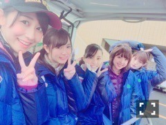

| 2016/03 29 Tue | 斎藤ちはる 努力、感謝、笑顔。 改めて大切。(´>∀< ｀)ゝ |
ちはるーむへようこそ(｡･o･｡)ﾉ
かきあげ風前髪...♡
前髪が伸びてきたから少しづつできるようになってきた( ◦˙ ˙◦ )！
街中でかきあげ前髪の女の人を見ると見惚れてしまうの...♡
素敵だな〜かっこいいな〜って！
憧れるのー！！
らりん。
らりんの、乃木坂としての最後のブログが更新されましたね。
なんか今でもまだ、
らりんがもう乃木坂ではないってことが信じられない。
だって4年半一緒に活動してきたんだもん。
卒業ライブしたって、
これからはファンとして応援するからって言われたって、
いつも側で太陽のような存在で笑ってた
らりんがいなくなるなんて、信じられないよ。。
らりんは、いつもみんなをまとめてくれた。
みんなの真ん中から、時には遠くから1人でひとりひとりをみてくれた。
誰かが元気がないと、必ず声をかけてくれた。
大丈夫？どうしたの？話聞くよ、って。
誰よりも2期生に近い先輩で、
誰よりも2期生に愛の鞭を与える先輩だった。
アンダーライブ、らりんについて行こう、と言わずともがな、みんな決めていたくらいリーダー力があった。
もう一緒に活動はできないけど、
いつでも会うことはできるから...！
ご飯連れてってね♡焼き鳥ね♡笑
らりん本当にありがとう。
らりんという人に出会えてよかったよ。
アンダーライブ、全国ツアーも始まりました。
初めての地は、名古屋でした！
全国握手会の後、初めて行った、
ガラガラのアンダーライブ。
まさかこんなに大きくなれるとは思ってませんでした。
東北ツアーが4月から始まります！
今までと同じ力では負けてしまう。
名古屋ライブ、実はメンバーみんな喝をいれられました。
こんなもんじゃ甘い。まだまだ甘い。
アンダーが凄いと言われるには、こんなもんじゃ足りない。と。
こう言ってくださる方々に感謝して、
気持ち改め、みんなで頑張っていきます。
努力。感謝。笑顔。
本当に忘れてはいけないもの。
もうすぐ4月だって...！
びっくりだ...！
花粉にやられています。。
この時期辛いよね。。
私はヒノキ派。あなたは？？
乃木坂ゴルフ倶楽部も、新しいのが配信されています！！

みてね♡
愛未、めっちゃ透明感...！！
相方ちゃんなの。らぶなの。
おやすみ\( ˆoˆ )/
斎藤ちはる